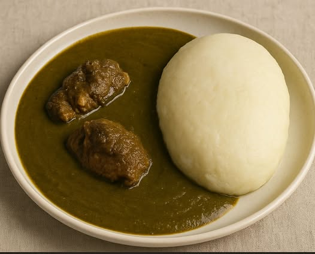

Home
Tuwon Masara

Description
Tuwon masara is a Nigerian corn flour swallow eaten primarily by the Hausa and Fulani that resembles fufu. It has several alternative names. This meal is not only common in the northern parts of Nigeria, it is well known around the world, it is just cooked in different ways depending on the country.
Ingredients
- Maize flour
- Kuka
- Pepper, Onions and Ginger
- Daddawa
- Palm Oil
- Crayfish
- Seasoning
Steps:
- Put water in a pot allow to boil
- In a bowl mix maize flour with water to make a thick paste poor it in to the boiling water and stir using turning stick and allow to cook for 15min
- Gently add more maize flour to tit and stir keep turning it with the turning stick until its thick
- Wash meat and put in a pot add water, chopped onions, pepper, ginger paste,daddawa, crayfish seasoning, pepper and Palm oil to it and allow to cook until the meat is soft
- When it's well cooked start adding the kuka powder gently while stirring continuously to avoid forming seeds keep adding kuka until it's thick cover and allow to simmer and serve with tuwon masara